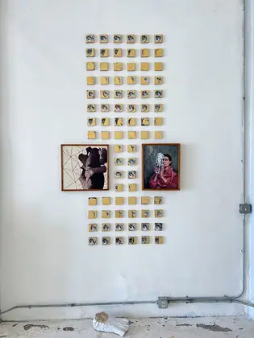
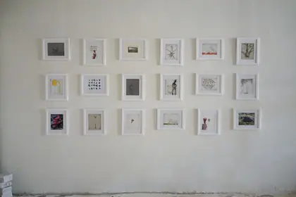
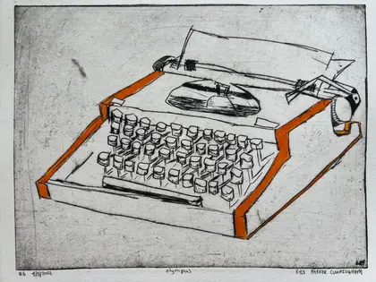
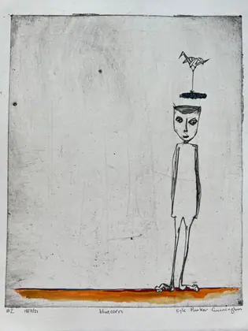
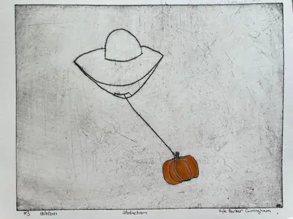

The Sieve
The archive has a search box; it should. What a front page can offer instead is sifting — grabbing the whole catalogue and shaking it until something falls through. Every control below is a radio input and a CSS :has() rule. It filters for real, it works with the browser back button off and the network gone, and it will still work in twenty years.
 Tubed Pachyderm2023 · printmaking
Tubed Pachyderm2023 · printmaking triangular circles2024 · painting
triangular circles2024 · painting Combinations and Re-Entry2023 · painting
Combinations and Re-Entry2023 · painting low angle sun rays2024 · painting
low angle sun rays2024 · painting airlift2021 · printmaking
airlift2021 · printmaking Bottled Oxygen2023 · printmaking
Bottled Oxygen2023 · printmaking does math control nature?2024 · painting
does math control nature?2024 · painting Surviving the Asteroid2022 · painting
Surviving the Asteroid2022 · painting pink and yellow2021 · painting
pink and yellow2021 · painting Cyclum Lunarem2017 · installation
Cyclum Lunarem2017 · installation Monsoon Bird2019 · painting
Monsoon Bird2019 · painting bison robotics2021 · painting
bison robotics2021 · painting above the clouds2024 · painting
above the clouds2024 · painting tugboat whale sequoia2021 · painting
tugboat whale sequoia2021 · painting Autumnal Twilight2023 · painting
Autumnal Twilight2023 · painting Michael2020 · painting
Michael2020 · painting transition2021 · painting
transition2021 · painting Path Through the Autumn Leaves2021 · painting
Path Through the Autumn Leaves2021 · painting Kite2018 · printmaking
Kite2018 · printmaking Future Capacitor2022 · painting
Future Capacitor2022 · painting Geometric Anatomy2023 · painting
Geometric Anatomy2023 · painting felt and lived2024 · painting
felt and lived2024 · painting Docile2022 · painting
Docile2022 · painting Cadence2015 · painting
Cadence2015 · painting Shawn Fischer2020 · painting
Shawn Fischer2020 · painting the berry picker2021 · painting
the berry picker2021 · painting Binoculars2015 · painting
Binoculars2015 · painting Elephant Mask2023 · printmaking
Elephant Mask2023 · printmaking Nana2020 · painting
Nana2020 · painting stole the rainbow2021 · printmaking
stole the rainbow2021 · printmaking lunar lander2021 · printmaking
lunar lander2021 · printmaking equilateral equilibrium2024 · painting
equilateral equilibrium2024 · painting cydney and val2021 · painting
cydney and val2021 · painting fall 20212021 · other
fall 20212021 · other Muxy2009 · painting
Muxy2009 · painting Aeropress2018 · printmaking
Aeropress2018 · printmaking preservation cactus2021 · painting
preservation cactus2021 · painting Ken2022 · painting
Ken2022 · painting Arm Fauna2014 · painting
Arm Fauna2014 · painting Solar Ascension2020 · painting
Solar Ascension2020 · painting Teardrop2018 · printmaking
Teardrop2018 · printmaking Clouds2015 · painting
Clouds2015 · painting Yellow and Orange2017 · painting
Yellow and Orange2017 · painting two squared2024 · painting
two squared2024 · painting Dayhike2023 · printmaking
Dayhike2023 · printmaking the mother bear2021 · painting
the mother bear2021 · painting Atmospheric Whales2014 · painting
Atmospheric Whales2014 · painting Rainfall2015 · installation
Rainfall2015 · installation Prickly Pear2018 · painting
Prickly Pear2018 · painting Six2019 · printmaking
Six2019 · printmaking 120 Volts2018 · printmaking
120 Volts2018 · printmaking Alligator Juniper (Adobe Canyon)2016 · printmaking
Alligator Juniper (Adobe Canyon)2016 · printmaking twenty-one years2024 · painting
twenty-one years2024 · painting Parasitic Pollen Eaters2013 · painting
Parasitic Pollen Eaters2013 · painting The Black Fire2022 · painting
The Black Fire2022 · painting Alligator Juniper2018 · printmaking
Alligator Juniper2018 · printmaking Deep Sea2018 · printmaking
Deep Sea2018 · printmaking Boom Box2016 · printmaking
Boom Box2016 · printmaking Hands2018 · painting
Hands2018 · painting Airdrop2018 · painting
Airdrop2018 · painting Enso2015 · painting
Enso2015 · painting Lunarem2018 · printmaking
Lunarem2018 · printmaking Air Lift2016 · printmaking
Air Lift2016 · printmaking orbits (plankton dreaming of a sedimentary afterlife)2024 · painting
orbits (plankton dreaming of a sedimentary afterlife)2024 · painting Day Hike2016 · printmaking
Day Hike2016 · printmaking molecule2021 · sculpture
molecule2021 · sculpture In The Pines2023 · printmaking
In The Pines2023 · printmaking Seven2018 · painting
Seven2018 · painting rhino radar2021 · painting
rhino radar2021 · painting Dodecahedron2013 · painting
Dodecahedron2013 · painting espresso machine2014 · painting
espresso machine2014 · painting Me Own Juniper2012 · painting
Me Own Juniper2012 · painting Rhino Radar (Arm Fauna)2022 · painting
Rhino Radar (Arm Fauna)2022 · painting Pet Walk2014 · painting
Pet Walk2014 · painting rocks glass2021 · printmaking
rocks glass2021 · printmaking alpenglow at mineral creek with the adults after the babies have gone to sleep2024 · painting
alpenglow at mineral creek with the adults after the babies have gone to sleep2024 · painting Flicker Rhino2018 · painting
Flicker Rhino2018 · painting pollen and larvae2024 · painting
pollen and larvae2024 · painting paper neck giraffes2021 · painting
paper neck giraffes2021 · painting Split the Atom2015 · painting
Split the Atom2015 · painting vacation2021 · printmaking
vacation2021 · printmaking owl2021 · other
owl2021 · other Coffee Carafe2014 · painting
Coffee Carafe2014 · painting Pruning2019 · printmaking
Pruning2019 · printmaking Crystal Tooth Whale2018 · painting
Crystal Tooth Whale2018 · painting Narwhal2018 · painting
Narwhal2018 · painting Thursday2018 · painting
Thursday2018 · painting there once was ice here2021 · painting
there once was ice here2021 · painting Bison at Sunset2014 · painting
Bison at Sunset2014 · painting Thread2022 · other
Thread2022 · other
The Meaning of Time2023 · installation Shade Cloud2023 · printmaking
Shade Cloud2023 · printmaking Migratory Scavengers2020 · painting
Migratory Scavengers2020 · painting Three Blue Corn2018 · painting
Three Blue Corn2018 · painting Bonsai Giant Sequoia2020 · painting
Bonsai Giant Sequoia2020 · painting Expansion2014 · painting
Expansion2014 · painting First Contact2023 · painting
First Contact2023 · painting Daydream2023 · printmaking
Daydream2023 · printmaking the algebra of water vapor2024 · painting
the algebra of water vapor2024 · painting Space Worm2018 · other
Space Worm2018 · other Octobat2018 · painting
Octobat2018 · painting out there, on the horizon, a solitary cloud2024 · painting
out there, on the horizon, a solitary cloud2024 · painting the atmosphere's electric finger2024 · painting
the atmosphere's electric finger2024 · painting symbologies intertwine electronically2024 · painting
symbologies intertwine electronically2024 · painting separate, yet delicate, representations of existence2024 · painting
separate, yet delicate, representations of existence2024 · painting butterfly conundrum2021 · printmaking
butterfly conundrum2021 · printmaking Approximate Completion2016 · painting
Approximate Completion2016 · painting the river in the sky2024 · painting
the river in the sky2024 · painting cyclic repetition2021 · painting
cyclic repetition2021 · painting Visible2022 · painting
Visible2022 · painting Calavera Del Caballo2023 · painting
Calavera Del Caballo2023 · painting Saturday Evening Owls2022 · painting
Saturday Evening Owls2022 · painting Self Portrait2019 · painting
Self Portrait2019 · painting Corn Sky Connection2014 · painting
Corn Sky Connection2014 · painting towers2024 · painting
towers2024 · painting Elephant Mask2018 · painting
Elephant Mask2018 · painting Riot Ghost2017 · printmaking
Riot Ghost2017 · printmaking Egg2015 · painting
Egg2015 · painting Tomorrow2019 · installation
Tomorrow2019 · installation bottled lightning2024 · painting
bottled lightning2024 · painting balance2021 · printmaking
balance2021 · printmaking Prophets2019 · installation
Prophets2019 · installation Spring2016 · painting
Spring2016 · painting Pinned2018 · painting
Pinned2018 · painting A. Muscaria2018 · painting
A. Muscaria2018 · painting Tomorrow2019 · installation
Tomorrow2019 · installation Substantial2015 · painting
Substantial2015 · painting
Mycellium2022 · other Rocket Propelled Clovis Point2020 · painting
Rocket Propelled Clovis Point2020 · painting Butterfly Conundrum2015 · painting
Butterfly Conundrum2015 · painting Alligator Juniper2020 · printmaking
Alligator Juniper2020 · printmaking Origami Beetroot2022 · printmaking
Origami Beetroot2022 · printmaking transplanter2021 · painting
transplanter2021 · painting Once Creatures Existed2022 · installation
Once Creatures Existed2022 · installation Rocket Propelled Clovis Point2022 · printmaking
Rocket Propelled Clovis Point2022 · printmaking
Olympus2022 · printmaking Robot Family2018 · painting
Robot Family2018 · painting Submerged2022 · printmaking
Submerged2022 · printmaking Continuation2022 · other
Continuation2022 · other Field Theory AP2018 · printmaking
Field Theory AP2018 · printmaking Sunflowers2022 · printmaking
Sunflowers2022 · printmaking expansion drypoint2021 · printmaking
expansion drypoint2021 · printmaking Ghost Thugs2022 · printmaking
Ghost Thugs2022 · printmaking Nogal Canyon2022 · printmaking
Nogal Canyon2022 · printmaking Solstice2020 · installation
Solstice2020 · installation Skull2022 · printmaking
Skull2022 · printmaking
Blue Corn2022 · printmaking
Abduction2022 · other Harmonics2023 · painting
Harmonics2023 · painting Space Owl2022 · printmaking
Space Owl2022 · printmaking Tecate2018 · printmaking
Tecate2018 · printmaking Astro Bee2023 · printmaking
Astro Bee2023 · printmaking Saber Tooth Puma2023 · printmaking
Saber Tooth Puma2023 · printmaking Stole the Rainbow2018 · printmaking
Stole the Rainbow2018 · printmaking Gardener2023 · printmaking
Gardener2023 · printmakingHow it works
Each facet is one radio group with an “any” default. One generated rule per option: body:has(#hue-cool:checked) .w:not(.hue-cool){display:none}. Four groups compose as AND for free, because each rule only ever hides.
Why radios and not checkboxes
Honesty. Multi-select needs OR inside a group, and pure CSS can only express that by enumerating every subset. Radios give you a correct, tiny, permanent filter; checkboxes would need a line of JavaScript and I would rather show you the version that never breaks.
Where it hands off
Four facets is a sieve, not a query language. The moment you want drypoint, 2018, still available, under 300mm, that is the archive's job, and it is one link away.
The honest gap
The counts are totals per facet, computed at build time — they do not update as you sift, because a static page can't count what it just hid. Live counts are the one thing here worth spending JavaScript on.